Control a bulb from anywhere with MQTT
A toggle on an Adafruit IO dashboard publishes ON or OFF. The ESP32 is subscribed over MQTT and switches a relay that drives a bulb.
Overview
This project switches a bulb or LED on and off from a web dashboard. The dashboard is hosted by Adafruit IO. The browser never talks to the ESP32’s GPIO directly. Instead, the dashboard updates a feed called Bulb, Adafruit IO makes that value available over MQTT, and the ESP32 receives it because it is subscribed to the matching topic.
Objectives
- Connect the ESP32 to Wi-Fi and get an IP address.
- Log in to Adafruit IO with the account username and key.
- Create the Bulb feed and an ON and OFF toggle on a dashboard.
- Send ON and OFF commands with MQTT publish and subscribe.
- Process the received command in the firmware.
- Drive a relay from GPIO 26 to switch the bulb or LED.
- Check every stage in the Serial Monitor and on the dashboard.
Components and tools
| Item | Purpose | Detail |
|---|---|---|
| ESP32 Dev Module | Main IoT controller | Wi-Fi and MQTT client |
| Relay module | Electrical switching stage | Controlled from GPIO 26 |
| Bulb or LED load | Physical output | ON and OFF |
| Wi-Fi network | Internet connection | Needed by the ESP32 |
| Arduino IDE | Firmware development and upload | ESP32 selected as the board |
| Adafruit MQTT Library | MQTT implementation | Version 2.6.6 |
| Adafruit IO | Dashboard, feed and MQTT service | Account kumaraguru_rac |
| Browser or PC | User interface | Operates the dashboard toggle |
MQTT basics
MQTT (Message Queuing Telemetry Transport) is a light publish and subscribe protocol that is common in IoT. The sender and receiver never talk to each other. A broker receives each message and forwards it to every client subscribed to that topic.
| Term | Meaning | In this project |
|---|---|---|
| Broker | Central server that receives and routes messages | Adafruit IO MQTT service |
| Client | Device or software connected to the broker | The ESP32 |
| Publisher | Sends a message to a topic | The dashboard side, publishing the toggle value |
| Subscriber | Listens for messages on a topic | The ESP32, subscribed to the Bulb topic |
| Topic | The address a message is sent to | kumaraguru_rac/feeds/Bulb |
| Payload | The message content | ON or OFF |
| Feed | An Adafruit IO data channel | Bulb |
- Topic
kumaraguru_rac/feeds/Bulb.kumaraguru_racis the Adafruit IO username,feedsmarks a feed route andBulbis the feed name. - ClientThe ESP32 first joins Wi-Fi, then uses the Adafruit MQTT library to keep a session open with Adafruit IO and wait for new values.
- Payload
ONasks for the load to be on andOFFasks for it to be off. These exact strings appear in the Serial Monitor.
Project parameters
The ESP32 builds an MQTT client from a network connection, the broker address and port, and the account login. It then subscribes to the Bulb feed.
WiFiClient client;
Adafruit_MQTT_Client mqtt(
&client,
AIO_SERVER,
AIO_PORT,
AIO_USERNAME,
AIO_KEY
);
Adafruit_MQTT_Subscribe bulbFeed =
Adafruit_MQTT_Subscribe(
&mqtt,
AIO_USERNAME "/feeds/Bulb"
);| Parameter | Value | Meaning |
|---|---|---|
| client | WiFiClient object | Network transport used by the MQTT client |
| AIO_SERVER | io.adafruit.com | Host name of the Adafruit IO MQTT service |
| AIO_PORT | 1883 | MQTT TCP port used in the code |
| AIO_USERNAME | kumaraguru_rac | Adafruit IO account name |
| AIO_KEY | Hidden | Secret key that authenticates the account |
| RELAY_PIN | 26 | ESP32 GPIO connected to the relay input |
| Subscription topic | kumaraguru_rac/feeds/Bulb | Route used to receive bulb commands |
| Payload | ON / OFF | State values the firmware handles |
Port and topic are different things. 1883 tells the client which broker port to connect to. kumaraguru_rac/feeds/Bulb tells MQTT which message stream to use.
Adafruit IO setup
- Create or choose the Adafruit IO account.
- Create a dashboard named Bulb.
- Add a Toggle block to the dashboard.
- Create the Bulb feed in the Default group and connect the toggle to it.
- Set the button text and value to ON and OFF.
- Create the block, then use the toggle to publish commands.
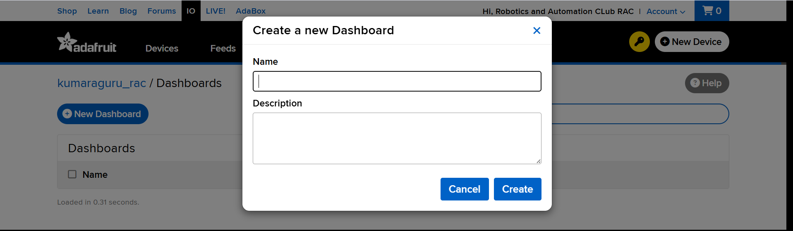
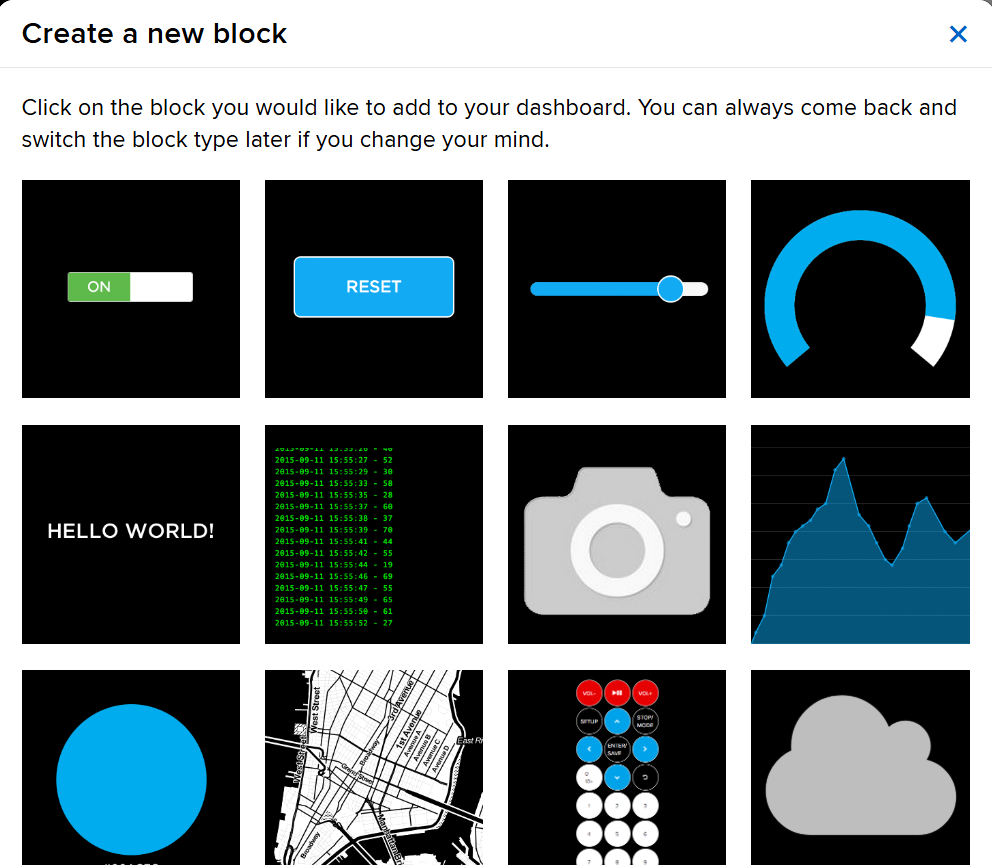
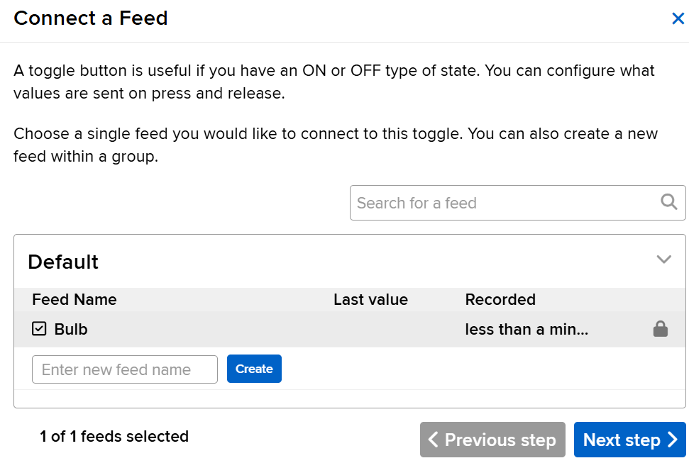
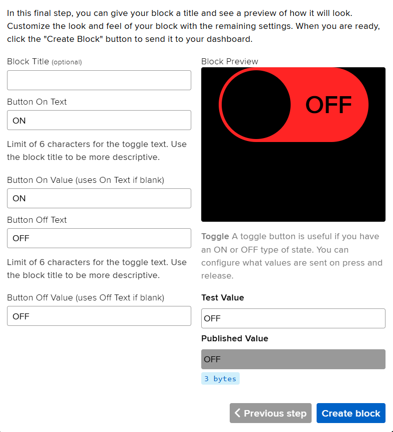
Arduino IDE setup
With the ESP32 board package installed, the Adafruit MQTT Library (version 2.6.6) was added from the Library Manager. The sketch then compiled for the ESP32 Dev Module.
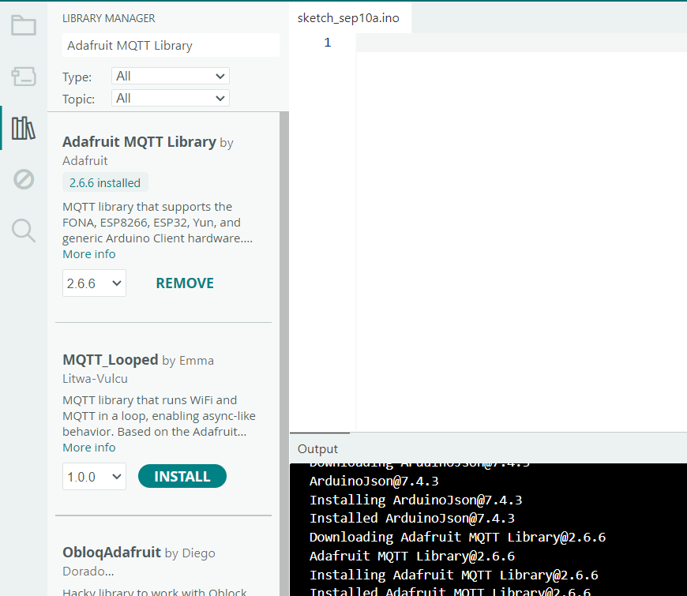
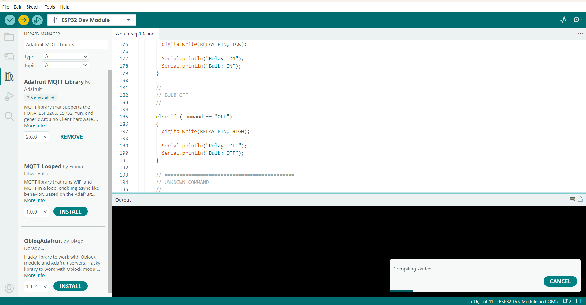
Libraries and configuration
WiFi.h gives the ESP32 Wi-Fi functions. Adafruit_MQTT.h provides the MQTT base classes and feed objects. Adafruit_MQTT_Client.h is the client used to connect and subscribe.
#include <WiFi.h>
#include "Adafruit_MQTT.h"
#include "Adafruit_MQTT_Client.h"
#define WIFI_SSID "YOUR_WIFI_NAME"
#define WIFI_PASSWORD "YOUR_WIFI_PASSWORD"
#define AIO_USERNAME "kumaraguru_rac"
#define AIO_KEY "YOUR_ADAFRUIT_IO_KEY"
#define AIO_SERVER "io.adafruit.com"
#define AIO_PORT 1883
#define RELAY_PIN 26The Wi-Fi name, password and Adafruit IO key are placeholders. Keep your real values out of anything you publish.
Relay logic
// BULB ON
if (command == "ON") {
digitalWrite(RELAY_PIN, LOW);
Serial.println("Relay: ON");
Serial.println("Bulb: ON");
}
// BULB OFF
else if (command == "OFF") {
digitalWrite(RELAY_PIN, HIGH);
Serial.println("Relay: OFF");
Serial.println("Bulb: OFF");
}In this firmware a LOW output turns the relay on and a HIGH output turns it off, so the relay board is active-low.
Firmware structure
- Include libraries. Load Wi-Fi and Adafruit MQTT support.
- Define credentials and network values. Wi-Fi details, Adafruit IO username and key, broker host and port.
- Create the WiFiClient. This is the network transport.
- Create the MQTT client. Pass in the network object, broker, port, username and key.
- Create the feed subscription. Subscribe to the username plus
/feeds/Bulb. - Connect to Wi-Fi. Wait for a valid connection and an IP address.
- Connect to MQTT. Log in to Adafruit IO and keep the session open.
- Process incoming packets. Compare a new Bulb payload with ON or OFF.
- Drive GPIO 26. Set the relay level that matches the command.
- Print the evidence. Write the command and the relay and bulb state to the Serial Monitor.
How it works
- The user presses the ON or OFF toggle on the dashboard.
- The toggle publishes its text value to the Bulb feed.
- Adafruit IO exposes that feed through its MQTT service.
- The ESP32 stays connected to the broker and subscribed to
kumaraguru_rac/feeds/Bulb. - The broker forwards the new Bulb payload to the ESP32.
- The firmware compares the payload with ON or OFF.
- GPIO 26 is set to the relay level for that state.
- The relay switches the bulb or LED.
- The Serial Monitor prints the command and the resulting relay and bulb state.
| Stage | ON state | OFF state |
|---|---|---|
| Dashboard toggle | ON selected | OFF selected |
| Payload | “ON” | “OFF” |
| Firmware branch | command == “ON” | command == “OFF” |
| GPIO 26 output | LOW | HIGH |
| Relay result | Relay ON | Relay OFF |
| Physical load | Bulb or LED ON | Bulb or LED OFF |
Hardware photos
The dashboard toggle on the laptop and the bulb on the bench, in both states. The ESP32 and relay module are in front of the bulb holder.
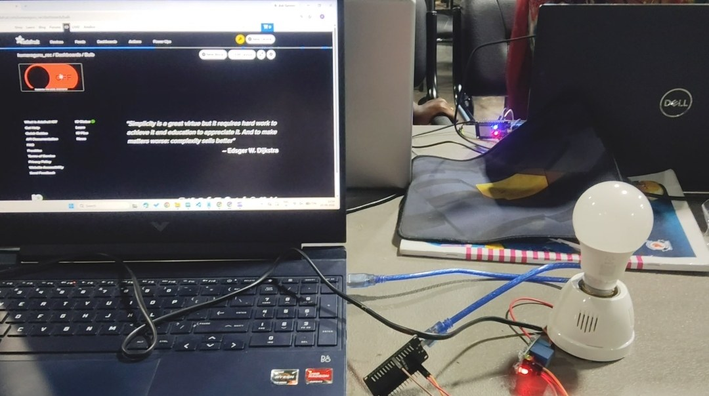
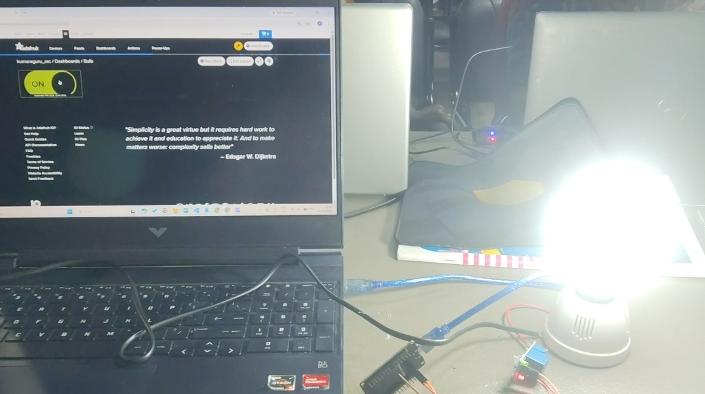
Output
Serial Monitor
After boot, the ESP32 prints its Wi-Fi status and IP address, then the feed name and topic, then connects to Adafruit IO. Each command from the dashboard shows up as a received message, followed by the relay and bulb state.
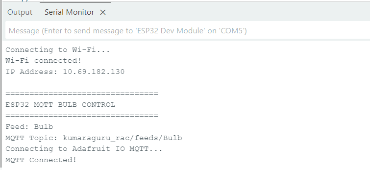
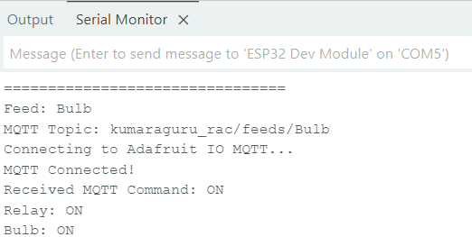
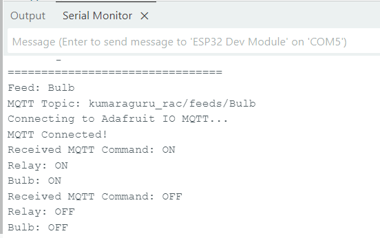
Dashboard states
Verification
| Check | Evidence | Status |
|---|---|---|
| Wi-Fi connection | Serial Monitor shows Wi-Fi connected and an IP address | Verified |
| MQTT connection | Serial Monitor shows MQTT Connected! | Verified |
| Correct feed | Serial Monitor shows Feed: Bulb | Verified |
| Correct topic | Serial Monitor shows kumaraguru_rac/feeds/Bulb | Verified |
| ON command | Received MQTT Command: ON | Verified |
| OFF command | Received MQTT Command: OFF | Verified |
| Relay response | Relay: ON and Relay: OFF messages appear | Verified |
| Dashboard response | Toggle switches between ON and OFF | Verified |
| Bulb response | Photos show the bulb off with OFF and lit with ON | Verified |
Result
The prototype sends commands from the Adafruit IO dashboard to the ESP32 over MQTT and the relay follows them. The Serial Monitor shows the expected order: Wi-Fi, MQTT connection, topic subscription, ON or OFF payload, relay control. The bulb photos show the physical result.
Troubleshooting
| Symptom | Likely cause | Action |
|---|---|---|
| MQTT does not connect | Wi-Fi, username, key, server or port problem | Check Wi-Fi, account values, broker host and port. |
| Dashboard changes but the relay does not | Wrong topic or no subscription | Confirm the code subscribes to kumaraguru_rac/feeds/Bulb. |
| Relay does the opposite | Active-low relay input | Confirm LOW is ON and HIGH is OFF for your relay board. |
| Compile error | Board support or library missing | Install ESP32 board support and the Adafruit MQTT Library. |
| No serial output | Wrong COM port or baud rate | Select the right ESP32 port and baud rate. |
| Unexpected payload | Toggle values set differently | Set the published values to exactly ON and OFF. |
| Key stops working | Key was regenerated or changed | Use the current key and update the firmware. |
Security and deployment
- Treat the Adafruit IO key as a secret. Keep it out of reports, screenshots, repositories and slides.
- Regenerate the key if it has appeared in a screenshot or shared document.
- Keep Wi-Fi passwords out of public source code.
- For real use, switch mains loads through a properly rated and isolated device. Never wire a mains load directly to an ESP32 pin.
- For better security, use a TLS-secured MQTT connection where the service and library support it.
- As the firmware grows, move secrets into a separate configuration file.
In depth: how it really works
This section follows one message through the whole system, explains the firmware piece by piece, and covers the MQTT ideas the task depends on: quality of service, keep-alive and the active-low relay.
What happens when you flip the toggle
- The dashboard sends a value. Moving the toggle writes
ONorOFFto theBulbfeed in Adafruit IO. - The broker publishes it. Adafruit IO’s MQTT broker takes the new value and publishes it on the topic
kumaraguru_rac/feeds/Bulb. - The ESP32 is already listening. Earlier, the ESP32 opened an outgoing TCP connection to
io.adafruit.comon port 1883, logged in with the username and key and subscribed to that topic. The broker sends the message down this open connection. - The sketch reads it.
mqtt.readSubscription(1000)waits up to one second for a packet. When one arrives it returns a pointer to the subscription that received it. - The sketch decides.
subscription == &bulbFeedconfirms which feed it came from.bulbFeed.lastreadholds the text, which is compared with"ON"and"OFF". - The relay switches. A LOW on GPIO 26 energises the relay coil, which closes the contacts and lights the bulb. HIGH releases it.
- The log confirms. The Serial Monitor prints the command, the relay state and the bulb state, so each stage can be checked.
Why MQTT and not HTTP
In Task 1 the browser connected to the ESP32. Here the ESP32 connects out to the cloud and keeps the connection open. An outgoing connection passes through a home router without any setup, so there is no port forwarding and no public address. The broker can then push a message the moment it arrives, instead of the device asking over and over whether anything changed. Each MQTT message also has a very small header, which suits a microcontroller.
The code, piece by piece
| Code | What it does and why |
|---|---|
WiFiClient client | The network connection object. MQTT travels over TCP, and this object is the TCP connection. |
Adafruit_MQTT_Client mqtt(&client, SERVER, PORT, USER, KEY) | Builds the MQTT client. It needs the connection, the broker address and port, and the account name and key used to log in. |
Adafruit_MQTT_Subscribe bulbFeed(&mqtt, USER "/feeds/Bulb") | Describes what to listen to. The two strings next to each other are joined by the compiler into kumaraguru_rac/feeds/Bulb. A typo here fails silently: the connection works but nothing ever arrives. |
#define RELAY_PIN 26 | The output pin wired to the relay input. |
mqtt.readSubscription(1000) | Waits up to 1000 ms for incoming data. It returns nothing if the time runs out, so the loop keeps cycling and the program stays responsive. |
subscription == &bulbFeed | With more than one subscription, this check tells which feed a message belongs to. With a single feed it is still a good habit. |
(char *)bulbFeed.lastread | The library keeps the most recent payload as a character buffer. Wrapping it in a String makes it easy to compare. |
command == "ON" | The comparison is exact and case-sensitive. on or On would be ignored, so the dashboard and the code must use the same words. |
digitalWrite(RELAY_PIN, LOW) | Turns the relay on, because this relay board is active-low. |
digitalWrite(RELAY_PIN, HIGH) | Turns the relay off. |
MQTT ideas explained
Broker, publisher, subscriber. Neither side knows the other exists. The publisher sends to a topic and the broker delivers to whoever subscribed. That is why Task 3 can add a new sender, IFTTT, without touching this firmware.
Topic structure. kumaraguru_rac/feeds/Bulb reads like a path: the account, the word feeds, then the feed name. Adafruit IO builds topics in this shape, so the account name must match the one used to log in.
Quality of service. MQTT has three delivery levels. QoS 0 sends once with no confirmation, so a message can be lost. QoS 1 repeats until the receiver acknowledges, so the message arrives at least once but may arrive twice. QoS 2 uses a four-step handshake so it arrives exactly once, at the cost of more traffic. For a switch, QoS 1 is a sensible choice: a repeated ON is harmless, but a lost one is not.
Keep-alive. The client and broker exchange tiny ping packets at an agreed interval. If they stop, the broker treats the client as gone. This is why an MQTT sketch pings in its loop and reconnects when the link drops.
Port 1883. This is the standard plain-text MQTT port. Port 8883 is the encrypted version. Plain text is fine for learning, but the key travels unencrypted, which is one more reason to regenerate it if it leaks.
Active-low relay. Many relay modules switch on when the input is pulled to ground, because the input drives an optocoupler LED to the supply. So LOW means on and HIGH means off. A bench test with a low-voltage load before connecting mains shows which way a given board works.
Why the relay. A GPIO pin supplies a few milliamps at 3.3 V and cannot power a bulb. The relay lets that small signal switch a separate circuit. Its contacts are electrically isolated from the ESP32, which keeps the mains side away from the microcontroller. Mains wiring should be done only with proper supervision and a rated, enclosed setup.
What can go wrong
- A wrong username or key stops the connection, and the Serial Monitor shows a connect error instead of
MQTT Connected!. - A wrong feed name connects but never receives a message.
- If Wi-Fi drops, the sketch has to reconnect to Wi-Fi first and then to the broker.
- A relay wired backwards makes the bulb light when the dashboard says OFF. Check the logic before blaming the cloud.
Conclusion
The Adafruit IO dashboard is the interface, the Bulb feed carries the state, and MQTT moves it with light publish and subscribe messaging. The ESP32 is the device-side client, and GPIO 26 drives the relay that switches the load. The serial output and photos confirm the whole chain from dashboard click to bulb.